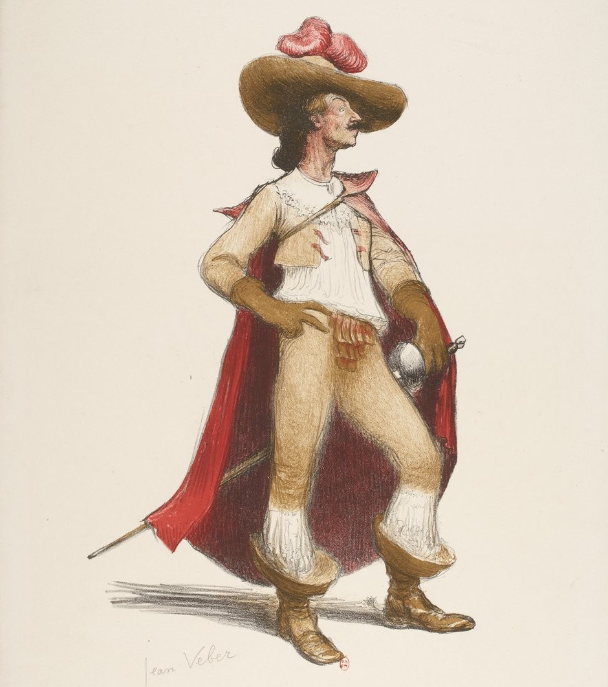
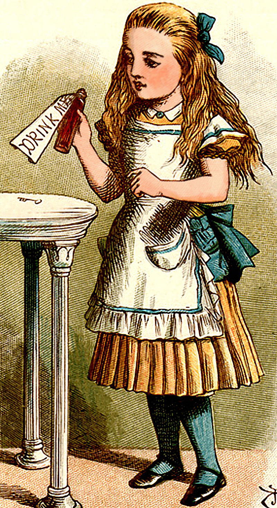
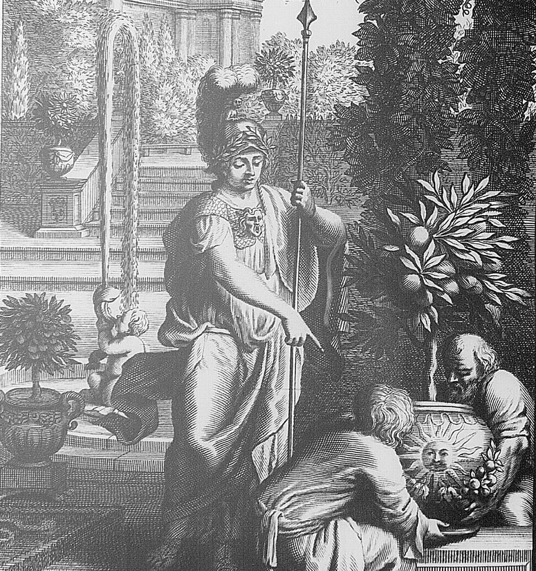

Type: Héro | Opposant | Adjuvant
D'Artagnan (soldat)
Béarn Maastricht en 1673
Célèbre mousquetaire au service du Roi, D'Artagnan est connu pour son caractère trempé et fier de Béarnais !
Les Trois MousquetairesType: Héro | Opposant | Adjuvant

Alice (personnage fantastique)
Cupiditate quia labore excepturi occaecati ut reiciendis. Ut expedita id rerum aperiam quia iste architecto. Voluptate vel consequatur voluptatum et sed laudantium ut. Illo non id voluptatem quia id. Necessitatibus vel et quaerat.
Les Aventures d'Alice au pays des merveilles De l'autre côté du miroir

Athéna (déesse grecque de la guerre)
Zeus Métis
Mont Olympe
L'OdysséeDartmoor (prison)
Royaume-Uni
Le chien des BaskervilleD'Artagnan (soldat)
Béarn Maastricht en 1673
Célèbre mousquetaire au service du Roi, D'Artagnan est connu pour son caractère trempé et fier de Béarnais !
Les Trois MousquetairesD'Artagnan (soldat)
Béarn Maastricht en 1673
Célèbre mousquetaire au service du Roi, D'Artagnan est connu pour son caractère trempé et fier de Béarnais !
Les Trois Mousquetaires